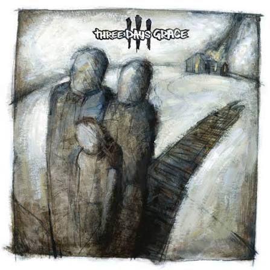
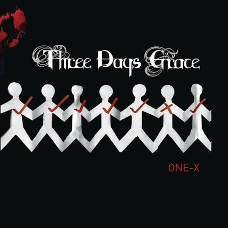
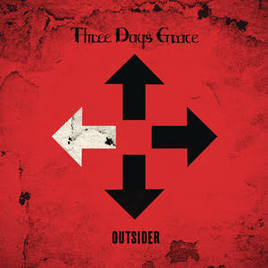

Three Days Grace
Their self-titled debut album. Features the breakout lead single "I Hate Everything About You".
Release date: July 22, 2003
"Some things will never happen again in your lifetime"

Their self-titled debut album. Features the breakout lead single "I Hate Everything About You".
Release date: July 22, 2003

Their second released album. Debuted at No. 2 on the Canadian Albums Chart and No. 5 on the US Billboard 200.
Release date: June 13, 2006

Their sixth studio album. According to Brad Walst, the bassist, the album represents "the journey to find your place" amidst a chaotic world.
Release date: March 9, 2018